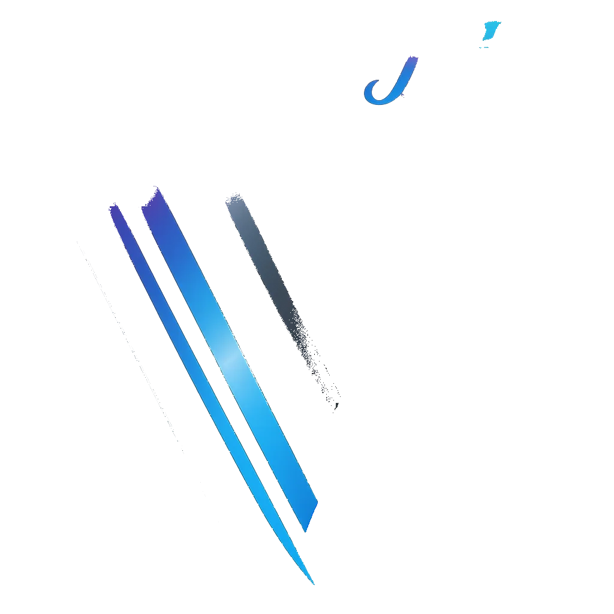
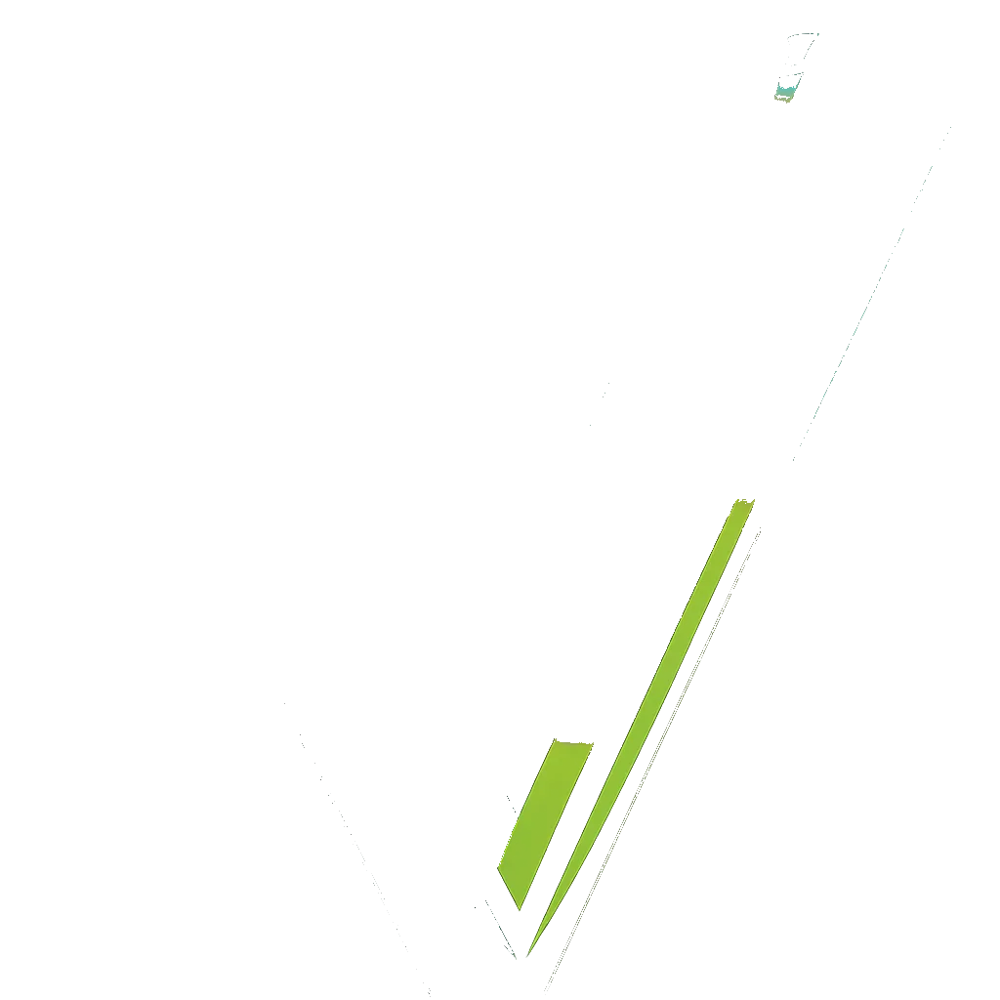
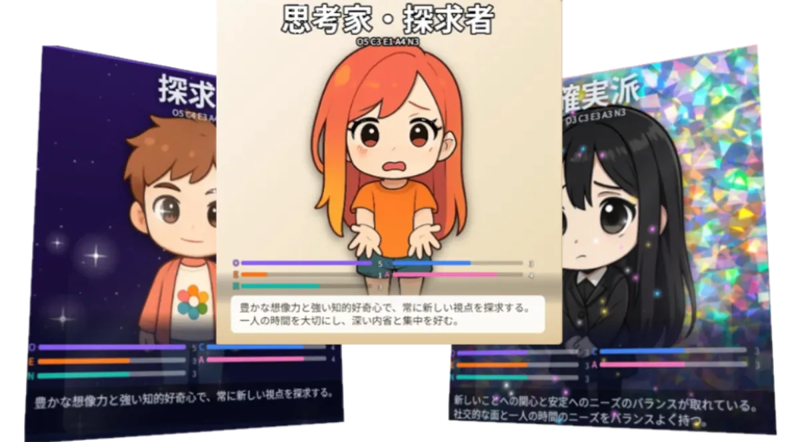
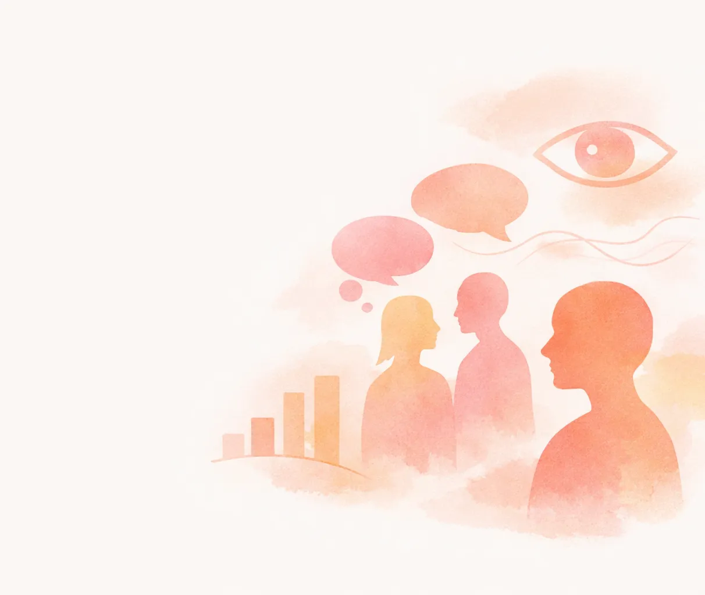

ビッグファイブ診断
性格診断
本当の自分を知る
DATA & SCALE
3125
性格タイプ数
5因子
科学的性格モデル
120問
最大精度（IPIP-NEO-120）
FEATURES
研究で実証
3125通りの組み合わせ
開放性・誠実性・外向性・協調性・感受性の5因子を組み合わせ、3125通りの分析からあなただけの性格タイプを導き出します。

可視化
キャラクターカード
あなたの性格がちびキャラになります。タイプに応じて髪型・服装・表情が変わる、あなただけのカード。

UPGRADE
もっと深く知る
より多くの質問に答えるほど、性格診断精度が上がり。120問版は学術研究と同等の精度になります。
どちらも自動保存対応。隙間時間に少しずつ進めてください。
デモ結果イメージ
恋愛・気になる人
王子様の推定性格
ビッグファイブ理論による観察分析（デモ）

推定キャラクター
開放性 好奇心旺盛高め
誠実性 計画的・責任感普通
外向性 社交的・話好き高め
協調性 思いやり・協力的低め
神経症傾向 感情的・敏感普通
恋愛相性スコア
85%
相性◎ — 息の合うパートナー
性格まとめ
社交的で創造力に富み、新しいことにも積極的に挑戦するタイプ。自分の意見をしっかり持ち、周囲に流されない芯の強さがある。計画的すぎる束縛より自由な関係を好む傾向も。